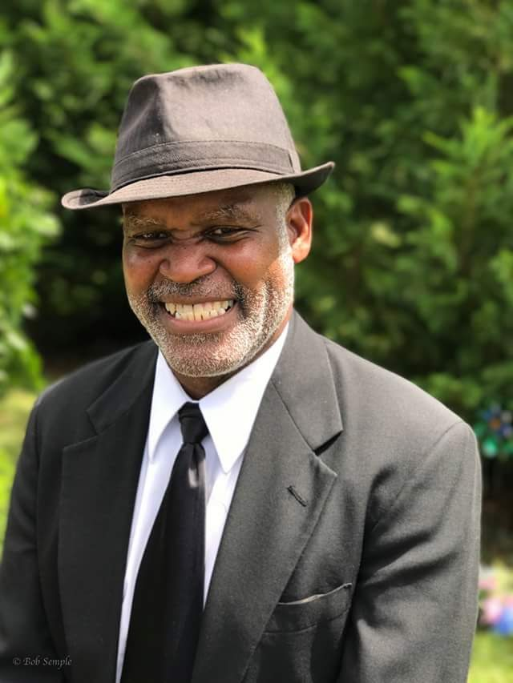

About Elite Compass
Training to Navigate the Spiritual Storms of Life
Mission is to offer support to navigate the storms of life.
Care is the intentional support or well-being of another person. The formal definition is the provision of what is necessary for the health, welfare, maintenance, and protection of someone or something.
Pastoral Care is the intentional support or well-being of the emotional/ spiritual context of a person.
John Patton says, “Care is pastoral when it looks deeper than the immediate circumstances of a person’s life and reminds that person that he or she is a child of God created in and for relationship.”
Elite compass Pastoral Care and Training supports people who need pastoral support, counseling and facilitation of emotional and spiritual life challenges.
The sailors to the new world traveled many hundreds of miles over the seas to experience the greatness of our God’s world. These sailors traveled the open seas with limited knowledge of what was ahead. On the open seas, every direction looks the same and thus distorts the sailor’s understanding of which judgments to make.
Now we, as those who journeyed over the currents of the oceans, journey over the currents of life. The sailor could not hope to make it to his destination because of the limited perception of the naked eye and his own apparent disposition on the waters. This idea of journeying over the currents is what stands behind the Compass Approach.
The Annual Care Giver Retreat
Elite Compass Pastoral Care and Training supports professional caregivers to reflect on their profession, refresh their outlook to remember why they love offering ‘Life on Life’ care to those who need effective assistance to take care of themselves daily. Elite Compass supports professional caregivers through the Annual Care Giver Retreat. A low cost retreat offering emotional, spiritual support to people who offer caregiving in a professional setting.
Purpose and Mission of CPE program
The purpose of CPE under Elite Compass Pastoral Care is to challenge the intern of pastoral care to be aware of his/her gifts as a pastoral figure to support people who desire help to cope with the difficulties of life. Using the Action-Reflection-Observation-Action method, the program offers the pastoral care giver opportunity to explore, define and embrace himself/ herself as an intentional minister to the hurting.
Elite Compass PC aims to empower the pastoral care giver to be active in the ministry of spiritual care on the human level regardless of religion, culture or other current determinants. Helping the intern to grow in the areas of self-care Elite Compass PC prioritizes the self as a powerful gift that can make a difference as they offer ministry with intension, focus and love. Elite Compass PC informs and challenges interns in areas of collaboration with peers to perform and provide effective pastoral care to those who come under their care.
As I describe the process of CPE to a new intern, I usually use the illustration of a three-legged stool. One leg is group interaction, the second in the supervision by a supervisor and the third is the engagement in a clinical work site. The process first informs the intern that they have to look outside of themselves to learn. Second, it helps the intern to know himself /herself deeply as a human being. Third, the program reminds the intern of their responsibility to offer effective care.
Chaplain Horace Cutter
Intro
Horace is a chaplain ministering to persons in very difficult life situations. He is a husband of Shibana, his wife and father of a blended family Ken, Albert, Kevin, Jehu-Perry, and Anastasia. Horace and Shibana love bowling, Sci-fi movies and spending time with their family. Horace was raised in a family with ten children and is a son of a minister of over 40 years. Chaplain Cutter is a graduate of Reformed Theological Seminary- Charlotte, NC (Master of Divinity). Horace has been serving as a chaplain since 2007. Chaplain Cutter is a Board Certified Pastoral Counselor (BCPC), Board Certified Clinical Chaplain (BCCC) and Hospice and Palliative Care Fellow offering Clinical pastoral education and training to interns under his mentorship. The Chaplain is an Ordained Teaching Elder with the Presbyterian Church in America and is the founder of the Annual Care Giver Retreat, a Professional Caregiver retreat that has been offered every spring for the past 13 years to those serving as care givers. Horace has a passion to support not only patients and families in crises but also the care givers who physically serve them.